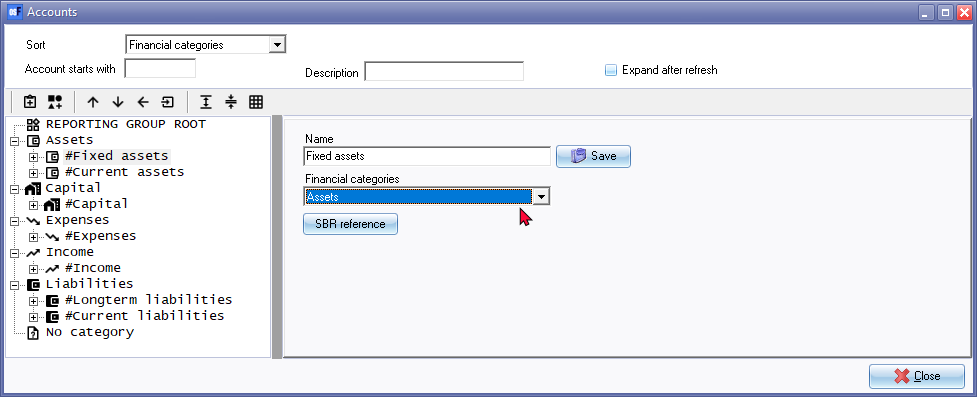

Account groups (Setup - Accounts)
The process for creating and managing reporting groups for Account Group 1 and Account Group 2 in the Setup - Accounts menu and linking account groups to financial categories:
- Creating or Deleting Reporting Groups in Setup - Accounts Menu:
- Access the Setup - Accounts menu.
- Within this menu, you have the ability to create or delete reporting groups for Account Group 1 and Account Group 2.
- By creating reporting groups, you can further categorize and organize your accounts within these account groups based on your specific requirements.
- Similarly, if needed, you can delete existing reporting groups that are no longer necessary.
- Linking Account Groups to Financial Categories in Setup - Accounts Menu:
- While in the Setup - Accounts menu, you can also link account groups to financial categories such as Assets, Capital, Expenses, Income, or Liabilities.
- This step allows you to associate each account group with its corresponding financial category to ensure accurate reporting and categorization of accounts.
- By linking account groups to financial categories, you establish a relationship between the groups and the broader financial classification framework.
To summarize, in the Setup - Accounts menu, you have the ability to create, delete, and manage reporting groups for Account Group 1 and Account Group 2. Additionally, you can link these account groups to the appropriate financial categories to ensure accurate categorization of your accounts within the chosen accounting framework.
You may set up to two Reporting groups for your Accounts. Account groups allows you to group or categorise the accounts on which you would like to report. Each Account group need to linked to a Financial category to structure the options to view, analyse and print the financial reports (i.e. the Trial balance, Income statement and Balance sheet, etc.).
To set reporting groups for General ledger accounts:
- On the Setup ribbon, select Setup → Accounts.
- Select "Financial categories, Reporting group 1" or "Reporting group2" in the "Sort" field.

- To add a new group, click on the
 Add:Group icon. Enter the name for the Group.
Add:Group icon. Enter the name for the Group. - Select a Group and select a Financial category (i.e. Assets, Capital, Expenses, Income or Liabilities) from the list.
- Click on the Save button.
- Repeat the process for all the Account groups.
- Once finished with Reporting group 1, select Reporting group 2 and repeat the link process.
|
|
The Save button will only be displayed (next to the Name) field, once any any changes are made. You need to click on the Save button. If you do not do this, your changes will be lost. |

|
Account group 1 |
Account group 2 |
|
|
|


|
|
Options to preview the structure of your Chart of Accounts: To preview or print a list of your general ledger accounts, including bank accounts and tax accounts, which you ave lined to account groups and financial categories, you may print a list of accounts linked to account groups from the following options on the Reports ribbon:
This will provide a preview of how the account groups and financial categories are printed on the reports, providing a preview of your Chart of Accounts based on your desired accounting framework. |

|
|
Options to change the structure of your Chart of Accounts: If you need to change the layout and structure on which the Trial balance, Income statement and Balance sheet groups and financial categories are printed on financial reports, you may change the sequence in the following options on the Setup ribbon:
These options will change the sequence and structure of accounts linked or mapped to account groups and financial categories. By adjusting the sequence of account groups using these options, you can modify the layout and structure of financial reports such as the Trial balance, Income statement and Balance sheet. These changes will affect how the account groups and financial categories are printed on the reports, providing a preview of your Chart of Accounts based on your desired accounting framework. |